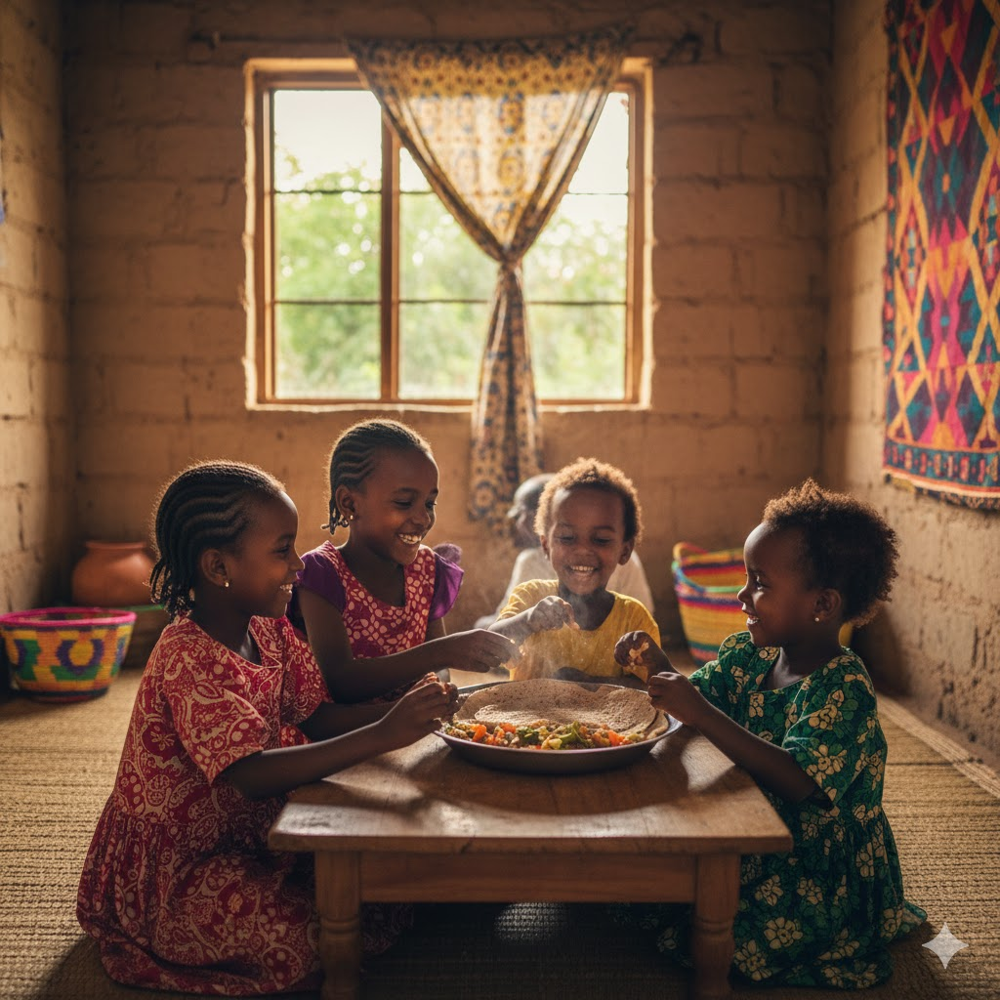
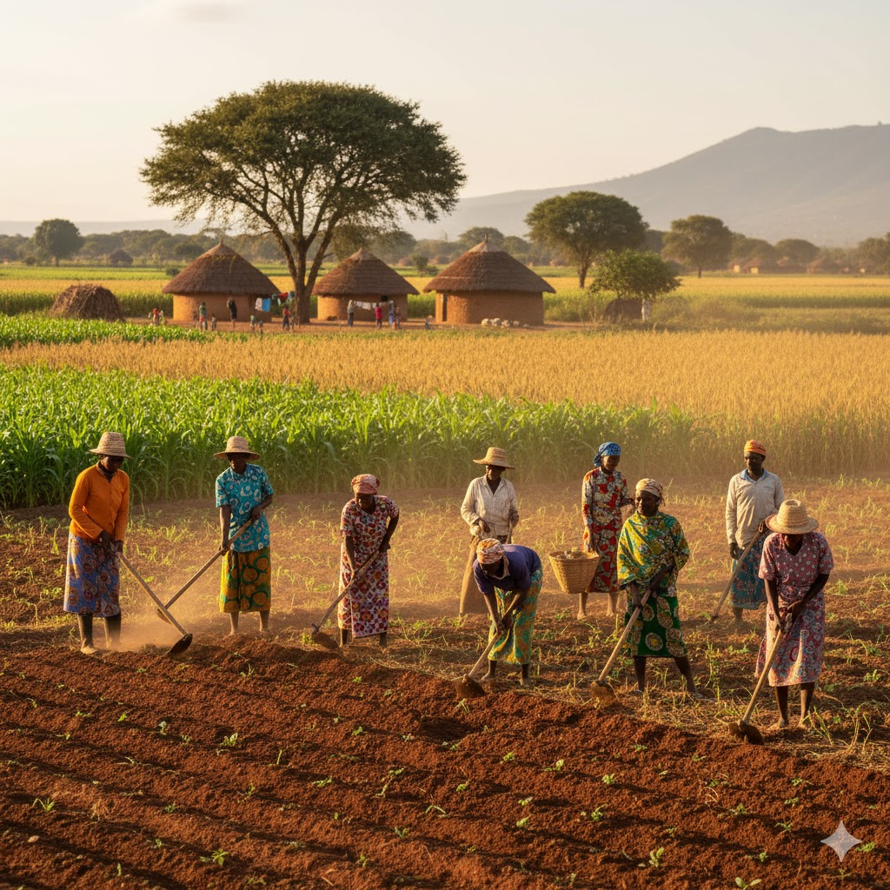
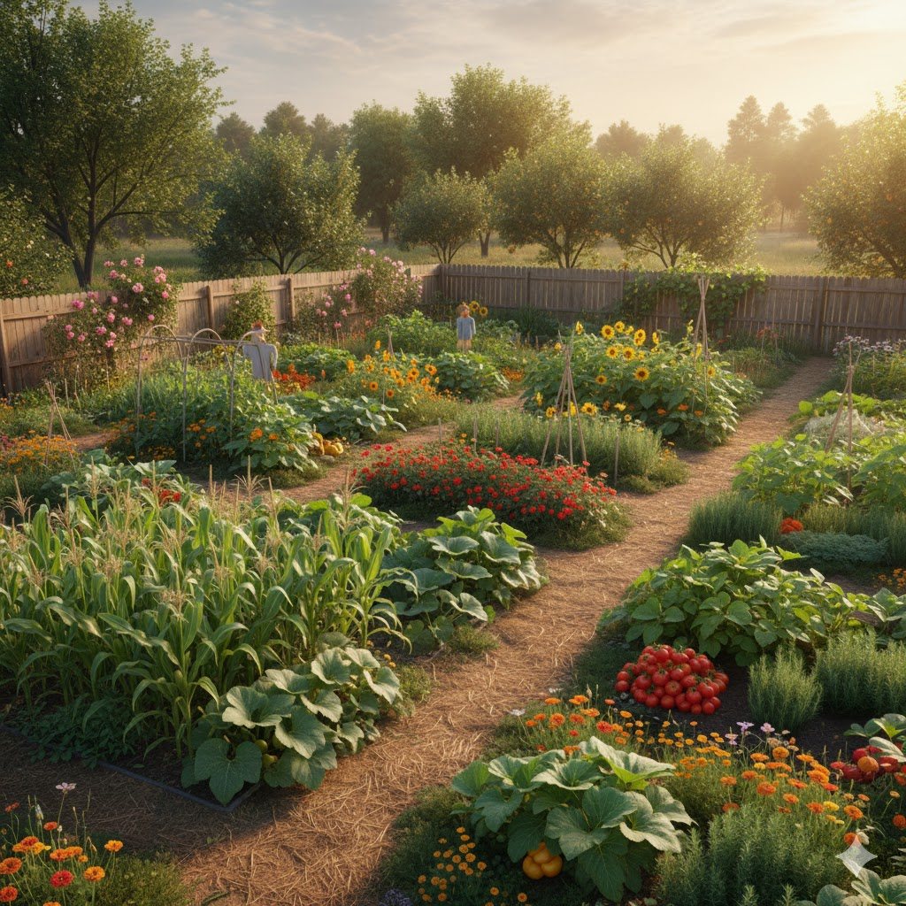
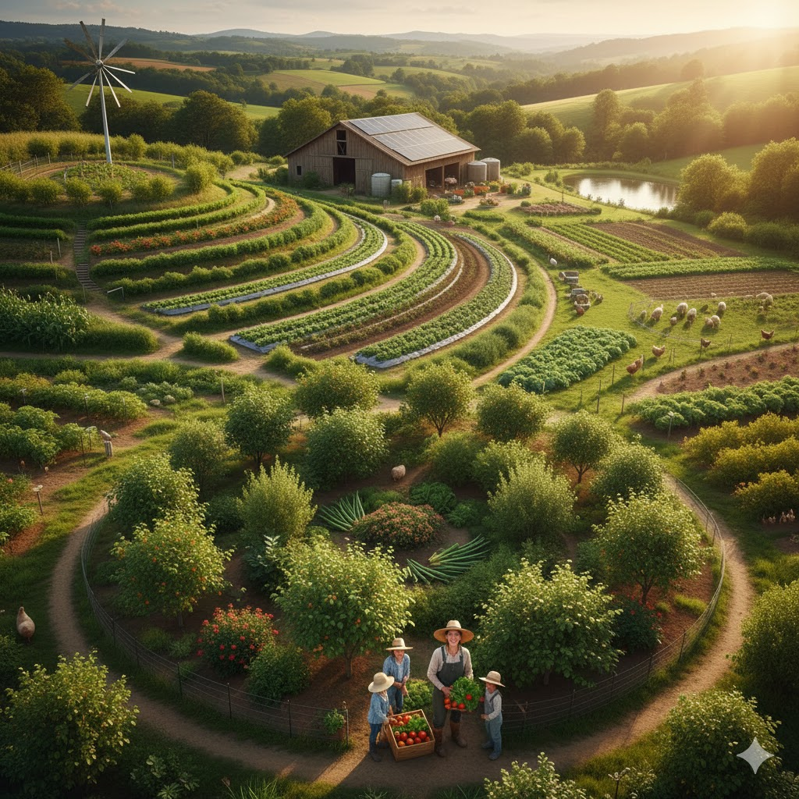
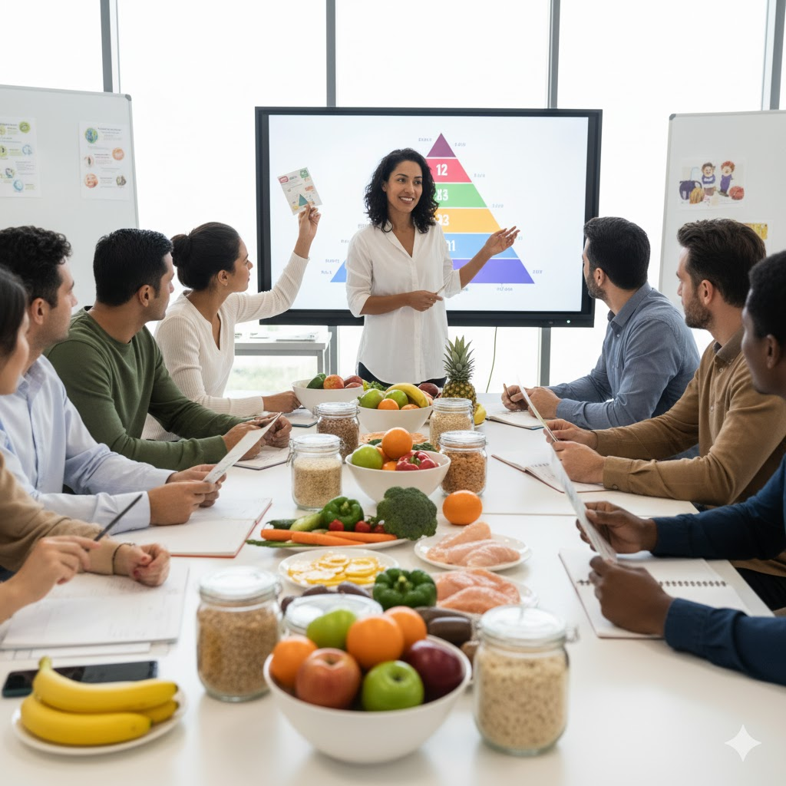
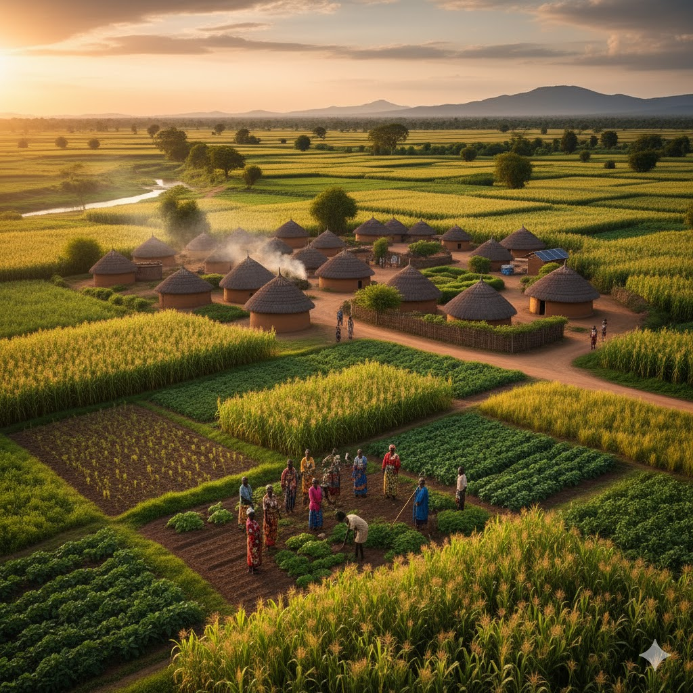
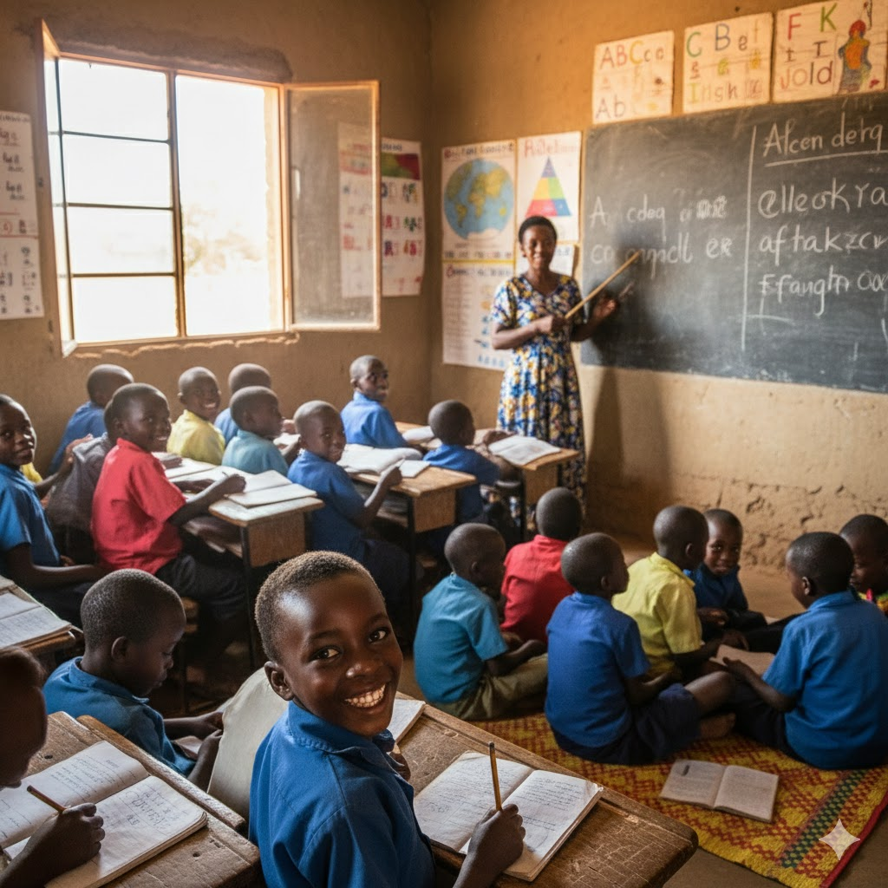

Join us in the fight to end hunger, achieve food security, improve food nutrition and promote
sustainable agriculture globally.
About Zero Hunger
Zero Hunger is the second of the 17 Sustainable Development Goals (SDGs) established by the United Nations in 2015.It aims to end hunger, achieve food security and improve nutrition and promote sustainable Agriculture by 2030.
Millions worldwide still suffer from Chronic undernourishment.Our mission is to raise awareness, mobilize resources and implement effective strategies to eradicate hunger in all its forms.

Our vision
A future where every person has access to safe, nutritious, and sufficient food all year.

Our Mission
To implement sustainable Agricultural practices and help communities most affected by food insecurity.

Our Approach
Collaborating with local organizations, government and individuals to create a lasting change.
Uderstanding the challenge
Watch this video to understand some of the complex factors causing the global hunger and why urgent action is needed.
Our Solutions And Strategies

Sustainable Agriculture
Promoting eco-friendly farming methods that increase yield and protect natural resources
Food Aid and Distribution
Providing emergency food assistance and establishing efficient food distribution networks.

Nutrition Education
Educating Communities on nutition, food preparation and preventing malnutrition.
Our Impact
Maria's story
Thanks to sustainable farming training, Maria's family has enough food to eat and sell excess crops.

The Green village project
A community transformed by new irrigation systems, leading to year-round food security.

Child Nutrition program
How providing school meals is improving attendance and academic performance for children.